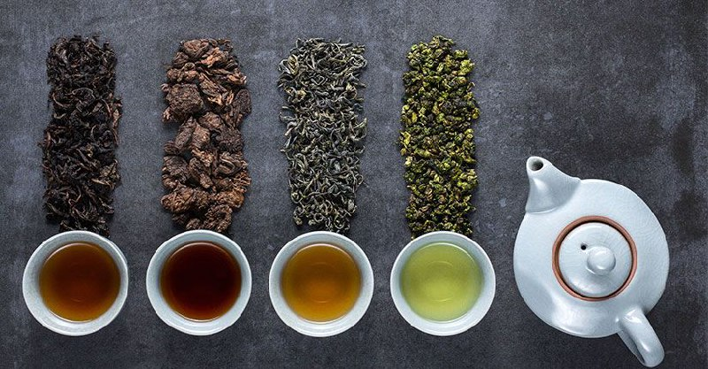

Чай — це не просто напій, це ціла культура, що існує протягом тисячоліть і об'єднує людей по всьому світу.
Залежно від регіону, традицій і способу обробки, чай може мати безліч смаків і ароматів. Це напій, який
дарує насолоду, заспокоює, бадьорить і надихає.
Існує дуже багато видів чаю, наприклад:
-
Зелений чай — один з найдавніших видів чаю, який славиться своїми корисними властивостями. Завдяки
мінімальній ферментації, він зберігає максимум антиоксидантів і природних компонентів, що робить його
відмінним засобом для підтримки здоров'я і енергії.
-
Чорний чай — найбільш популярний вид чаю в світі. Він проходить повну ферментацію, що надає йому
насичений смак і глибокий колір. Чорний чай добре поєднується з молоком і цукром, що робить його основою
багатьох національних традицій чаювання.
-
Матча (Маття) — японський зелений чай, який подрібнюється до стану порошку. Завдяки високому вмісту
L-теаніну, цей чай заспокоює і одночасно покращує концентрацію, а його яскравий смарагдовий колір робить
його візитною карткою японської культури.
-
Пуер — унікальний китайський чай, що зазнає тривалої ферментації та дозрівання. Його смак розвивається з
часом, набуваючи глибоких і складних відтінків. Пуер відомий своїм позитивним впливом на травлення і є
важливою частиною китайської чайної традиції.
-
Улун (Оолонг) — напівферментований чай, що поєднує в собі найкращі властивості зеленого і чорного чаю.
Його смак варіюється від ніжного квіткового до насиченого фруктового, а складний процес виробництва
надає йому особливу цінність.
-
Каркаде — яскравий чай з пелюсток суданської троянди, що популярний у тропічних країнах. Його
кислувато-солодкий смак освіжає і тонізує, а насичений червоний колір робить його візуально привабливим.
Чай — це більше ніж просто напій. Це спосіб знайти гармонію, відновити сили і насолодитися миттю спокою
серед метушні сучасного світу.
Ось цікаве фото чаїв:
